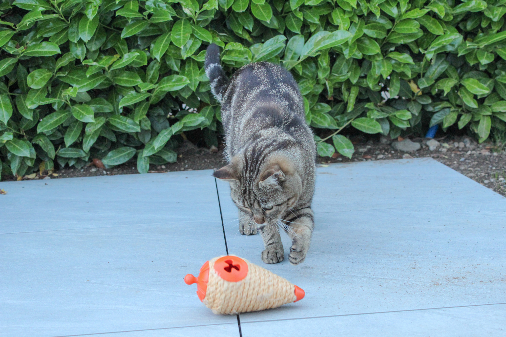
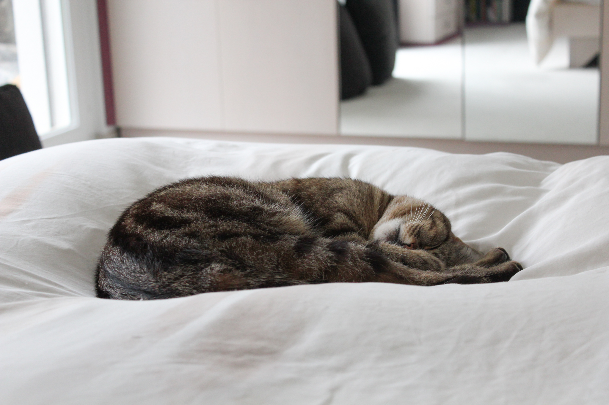
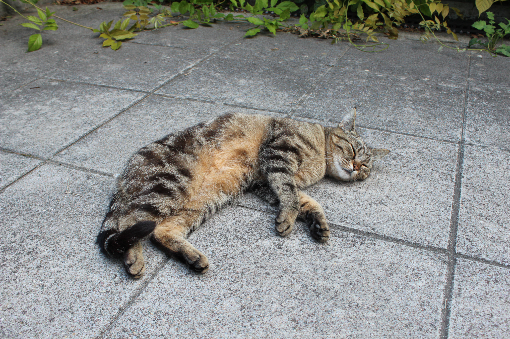
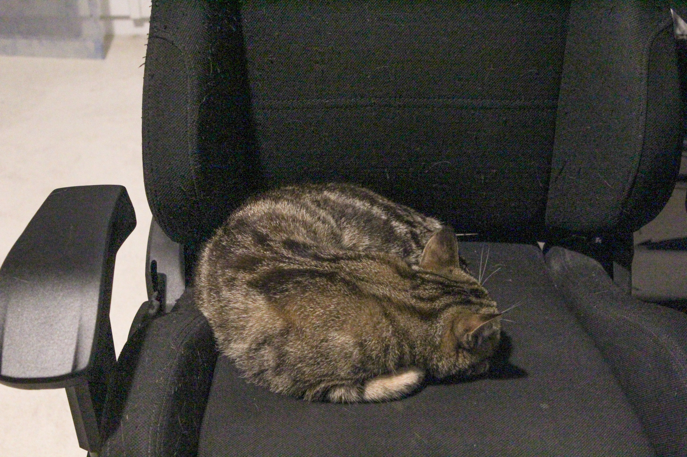

Der Alltag meiner Katze
Mit Hilfe der Bilder werde ich den angenehmen und einfachen Alltag meiner Katze ein wenig erklären und darstellen.
Unsere Katze ist oft zu faul zum Katzentor zu laufen und wartet dann oft an einer Tür oder einem Fenster bis wir aufmachen.
Wenn sie dann Hunger bekommt sie es entweder auf einem kleinem Teller oder in diesem kleinen Spielzeug so das sie sich das Essen auch verdienen muss.
Wenn sie dann zufrieden gegessen hat, macht sie eine Fellpflege und putzt sich. Dies macht auch sonst öfters über den Tag, da Katzen saubere Tiere sind.
Oft macht sie dann eine Pause und schläft eine Weile, was sie auch oft macht wenn draussen schlechtes Wetter ist.

Wenn die Sonne scheint findet man unsere Katze eigentlich nie im Haus, sie geniesst das warme Wetter lieber auch in unserem Garten.
Bei schönem Wetter sind die Steine auf unserer Terasse immer aufgewärmt und unsere Katze macht dort immer ein entspanntes Schläfchen.
Bei dieser Hitze sucht sie sich dann auch wieder ein Plätzchen im Schatten, bei dem sie in Ruhe den Tag geniesst.
Wenn sie draussen aber keine Ruhe findet oder es zu warm ist, kommt sie ins Haus und klaut mir oft meinen Stuhl und ruht sich dort aus.